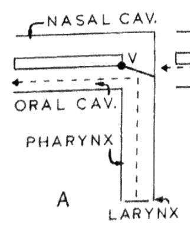
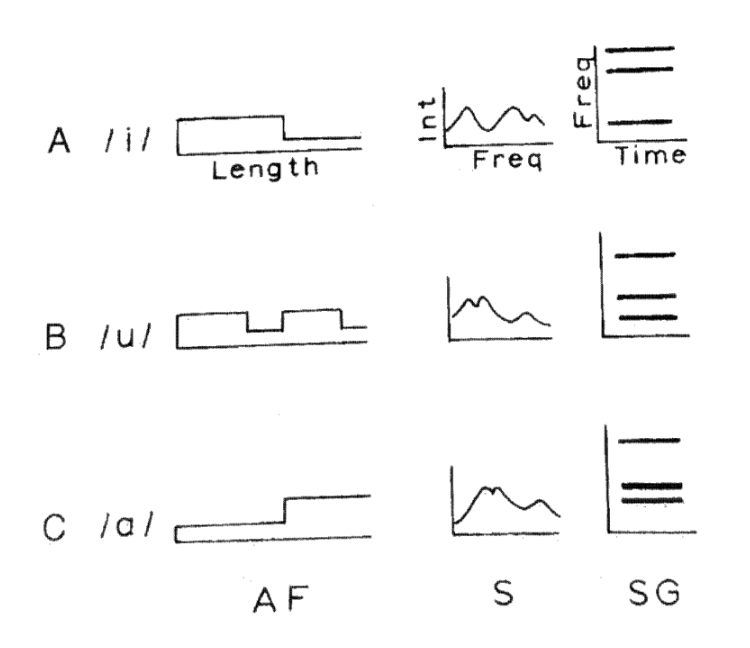
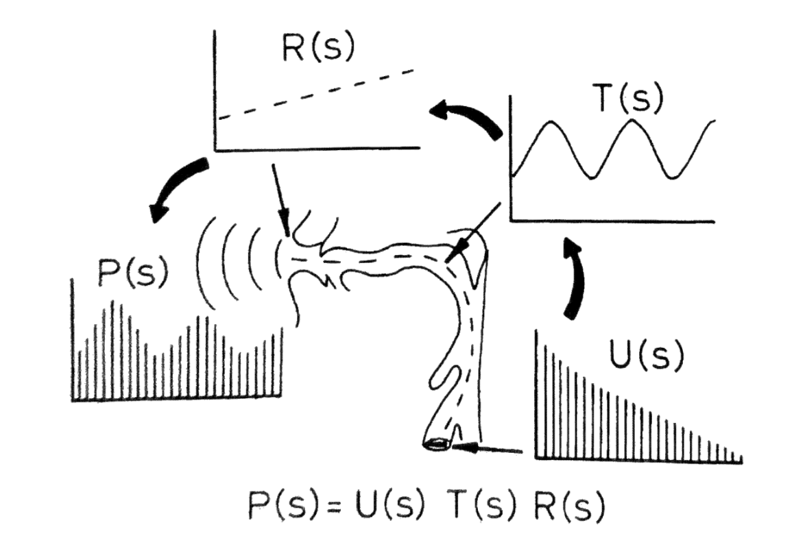
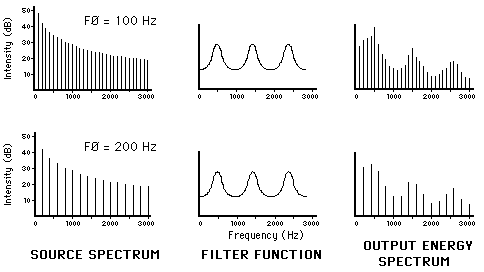

Samoglasniki
Samoglasniki so skupina glasov, pri katerih se glasilke tresejo, zato so vsi zveneči. Pri njihovi tvorbi je govorna cev odprta. Med seboj se razlikujejo predvsem glede na lego jezika in na obliko ustnic.
Akustična teorija samoglasnikov
Tukaj predstavljena teorija linear source-filter theory of speech production je bila prvič predstavljena v delu Gunnarja Fanta (1970) Acoustic theory of speech production (teorija je predstavlja v Stevens (2000)). Na kratko bomo predstavili teorijo glede izgovora samoglasnikov.
Samoglasniki so glasovi, ki nastanejo z vibriranjem glasilk (zvenečnost je izvor energije) in imajo relativno odprto govorno cev. Celotna govorna cev deluje kot resonančni/odzvočni prostor, tako da celotna govorna cev od glasilk navzgor deluje kot filter. Omenimo še, da pri nosnih glasovih pomembno vlogo igra velofaringealna zapora, ki se pri nosnih glasovih odpre, da se razširi rezonančni prostor še v nosno votlino. Pri nenosnih glasovih je velofaringealna zapora zaprta (Kent & Read, 2002, str. 17–18), gl. sliko 1.

Osnovni model
Model, ki ponazarja izgovor samoglasnikov, si lahko predstavljamo kot ravno cev, ki je na eni strani zaprta z membrano, ki predstavlja glasilki. Membrana ima manjšo odprtino. Drugi del cevi je odprt. Membrana je vibrator, ki je vir akustične energije. Ta potuje vzdolž cevi. Cev je rezonator (odzvočni prostor). Takšna cev ima neskončno število resonanc, ki so na frekvencah, definiranih z naslednjih razmerjem:
\[F_n = \frac{(2n-1) \cdot c}{4l} \tag{1}\]
Pri čemer je c hitrost zvoka, tj. okrog \(350 \frac{m}{s}\) , n je naravno število, l pa dolžina cevi.
Po formuli 1 lahko izračunamo osnovne frekvence nastalega glasu (samoglasnika). Predpostavimo, da je govorna cev dolga 17 cm:
\[F_1 = \frac{(2 \cdot 1 - 1) \cdot 350}{4 \cdot 0.175} = 500 \, \text{Hz} \tag{2}\]
\[F_2 = \frac{(2 \cdot 2 - 1) \cdot 350}{4 \cdot 0.175} = 1500 \, \text{Hz} \tag{3}\]
\[F_3 = \frac{(2 \cdot 3 - 1) \cdot 350}{4 \cdot 0.175} = 2500 \, \text{Hz} \tag{4}\]
\[F_4 = \frac{(2 \cdot 4 - 1) \cdot 350}{4 \cdot 0.175} = 3500 \, \text{Hz} \tag{5}\]
Opazimo, da so si višje resonančne frekvence različne za 1000 Hz. Pri tem moramo vedeti, da je govorna cev pri moškem dolga 17,5 cm. Govorna cev je razdalja od ustnic do glasilk. Govorna cev ima približno enako resonanco/odzvočnost kot ravna cev enake dolžine in premera. Če je cev daljša, so resonančne frekvence nižje, če pa je krajša, so ša višje (otroci in ženske imajo krajšo govorno cev, zato so imajo višji register, moški pa praviloma daljšo govorno cev in tako nižji register). Glavna dejavnika, ki določata dolžino govorne cevi in s tem višino resonančnih frekvenc, sta starost in spol (Kent & Read, 2002, str. 18–20).
Model predstavlja samo en samoglasnik, tj. sredinski centralni samoglasnik [ə].
Razširjeni model
Model, predstavljen v poglavju Osnovni model moramo zato, da lahko prikažemo frekvence drugih samoglasnikov, dopolniti. Cevi moramo spremeniti obliko, jo na posameznem delu razširiti oz. zožiti, da ponazorimo položaj jezika, ki zapira del govorne poti (Kent & Read, 2002, str. 20–22)
V omenjeni teoriji (angl. linear source-filter theory of speech production) gre za to, da se zračno valovanje (izraženo s frekvencami in glasnostjo) skozi govorno cev, ki deluje kot filter oz. resonančni prostor, spremeni oz. preoblikuje, da nato dobimo frekvence posameznega samoglasnika. Glasilke namreč vibriranjo z enako frekvenco, zato je treba spremeniti filter (obliko govorne cevi), da lahko izgovarjamo različne zveneče glasove, v našem primeru samoglasnike. To je prikazano na sliki 3.
Izvor energije so vibracije glasilk. Energijo lahko prikažemo kot linearni spektrum. Prva vrednost je vrednost osnovne frekvence (f0), naslednje pa so njen večkratnik. Dolžina črte prikazuje intenziteto/ energijo oz. glasnost (enota so decibeli (dB)). Če je osnovna frekvenca govorca npr. 120 Hz, bodo naslednje frekvence 240 Hz, 360 Hz, 480 Hz itd. Glasnost nima velikega vpliva na končne frekvence posameznega glasu, saj govor razumljiv, četudi govorimo nekoliko tišje oz. glasneje (Kent & Read, 2002, str. 23).


Opomba. U(s) = spektrum glasilk (grleni spektrum), T(s) = filter govorne cevi, R(s) = radiacijske značilnosti, P(s) = izhodni spektrum.

Laringealni spektrum in radiacijska značilnost
Laringealni spektrum je spektrum, ki prikazuje harmonične frekvence glasilk. Lahko je v obliki stolpcev ali pa krivulje. Večina energije je zbrane v nižjem frekvenčnem območju. Praviloma količina energije na posamezno harmonično frekvenco pade 12 dB na oktavo oz. 12 dB za vsako podvojitev višine frekvence (gl. sliko 4) (Kent & Read, 2002, str. 24).
Omenimo še radiacijsko značilnost (angl. radiation characteristic). Pri izhodu akustičnega signala (zvoka) se srečata dve atmosferi, atmosfera ustne votline in zunanja atmosfera. Zaradi odboja zvoka od ustne votline in širjenja le tega v vse smeri pride do filtra, ki poveča intenziteto nižjih frekvenc in zniža intenziteto višjih frekvenc (angl. high-pass filter). Razlika v jakosti je ca. 6 dB.
Formanti
Pisali smo o resonančnih frekvencah. V akustiki se zanje sinonimno uporablja termin formant. Harmonične frekvence, ki jih lahko opazujemo na laringealnem spektrumu, se zaradi filtra (govorne cevi) spremenijo. Vrhovi frekvenc, ki se izoblikujejo v filtru so vidni tudi na izhodnem zvočnem valovanju, ki ga zajamemo z mikrofonom. Na izhodnem spektrogramu vidimo (počrnjena) močnejša frekvenčna območja, to so formanti (gl. Kent & Read, 2002, str. 24) oz. povedano drugače: formanti predstavljajo močnejša frekvenčna območja pri naravnem govoru, prikazujemo jih s spektrogramom, na katerem so vidni kot črni snopi (Pompino-Marschall, 2009, str. 108). Gl. sliko 5, kjer je prikazana razporeditev energije po frekvenčnem prostoru od 0 Hz do 8 kHz.
Vrednost prvega formanta (F1) je pri visokih samoglasnikih (npr. /i/, /u/) nizka, pri nizkih (npr. /a/) pa visoka. Prvi formant nam posreduje podatek o položaju jezika, višja kot je lega jezika, nižja je vrednost F1. Drugi formant (F2) pa predstavlja položaj jezika glede na razmerje spredaj – zadaj. Pri sprednjih samoglasnikih se jezična ploskev približuje trdemu nebu, pri zadnjih samoglasnikih pa mehkemu nebu (samoglasnike lahko razdelimo na palatalne in velarne). F2 je najnižji pri zadnjih samoglasnikih (npr. /u/, /o/), najvišji pa pri sprednjih (npr. /i/, /e/) (prav tam: 125). Skladno z jezično ploskvijo se giba tudi spodnja čeljust. Osnovni ton (F0)1 predstavlja osnovno frekvenco melodije govora (angl. pitch), imajo ga le glasovi s ponavljajočim nihanjem (Ladefoged & Maddieson, 1996, str. 33). Višji formanti (npr. F5, F6 idr.) za določanje fonetičnih lastnosti glasov niso ključni, saj odražajo predvsem individualno zgradbo govoril posameznika (Palková, 1997, str. 106). O težavah pri odčitavanju formantov pri digitalnem spektrografiranju piše Jurgec (2004).

Prvi formant ima najnižjo frekvenco, zato se na spektrogramu nahaja spodaj, sledi mu drugi formant itd. Najbolj razlikovalna sta F1 in F2.
V Praatu je osnovna frekvenca oz. F0 prikazana kot intonacija (pitch; modra črta), ostali so prikazani z rdečimi pikami. Vključimo jih z ukazom View & Edit > Formant > Show formants. Praat samodejno prikaže prvih pet formantov (F1–F5), lahko pa jih prikažemo tudi več z ukazom View & Edit > Formant > Formant settings. V oknu Formant settings v polju Number of formant spremenimo število.
Višji formanti so manj stabilni, njihova stabilnost je odvisna tudi od kvalitete posnetka. Višje formante redko merimo in vključujemo v fonetično-fonološke raziskave.
V razdelku Merjenje formantov samoglasnikov bo predstavljeno merjenje formantov samoglasnikov v Praatu. Merjenje se lahko opravi ročno s pomočjo opazovanja oscilograma in spektrograma ter s percepcijo, lahko pa se poslužimo skripta, a moramo avtomatske meritve preveriti, saj lahko pride do napak.
Merjenje formantov samoglasnikov
Samoglasnike knjižne slovenščine s formanti opredeli Toporišič (2000, str. 46–49) in Toporišič (1975), pri čemer ne v Slovenski slovnici ne v prispevku Formanti slovenskega knjižnega jezika ne opredeli, kaj je formant. Razlago poda v Enciklopediji slovenskega jezika, kjer formant opredeli kot
Jakostno okrepljeno področje harmoničnih (ali drugačnih) tonov ali slušne energije na značilnem frekvenčnem področju posameznih (vrst) glasov. Zlasti izrazite ožjepasovne formante imajo samoglasniki, manj izrazite zvočniki, širše formantno področje pa nezvočniki. (Toporišič, 1992, str. 44–45.)
Natančneje opredeli prvi formant (F1), pri katerem razloži povezavo z osnovnim tonom in drugim formantom, in drugi formant (F2).
F1: Jakostno okrepljeni snop harmoničnih tonov (F1) osnovnega tona (ki ga zaznamuje ničti formant F0) v spektru samoglasnikov in zvočnikov. Skupaj s F2 odloča o različni naravi teh glasov. Če sledimo izgovornim mestom samoglasnikov v smeri od zgoraj spredaj k spodaj sredi in od tod dalje k zgoraj zadaj, je prvi formant tonsko zmeraj višje od i do a, od a do u pa zmeraj nižji; pri polglasniku je malo nižji kakor pri a. Gledano s stališča tvorbe glasov: čim višje in bolj spredaj ali zadaj je izgovorna točka samoglasnika, tem nižje je ta formant in narobe. (Toporišič, 1992, str. 236.)
F2: Formant nad spodnjim formantom, tonsko glede na samoglasniško barvo različno oddaljen, najbolj pri i nato pa zmeraj manj prek ozkega in širokega e, pa a in prek širokega in ozkega o ter končno u. Pri polglasniku je bolj oddaljen kakor pri a-ju. (Toporišič, 1992, str. 31.)
Sodobne meritve formantov standardne slovenščine so opravili Petek idr. (1996), Tivadar (2004), Tivadar (2010), Jurgec (2005) in Jurgec (2006). Pred Toporišičem je formantne vednosti ene govorke izmerila že Lehiste (1961). Njen prispevek prinaša več sonagramskih in oscilogramskih slik kot Toporišičev prispevek.
V splošnem velja, da je vrednost prvega formanta (F1) neposredno sorazmerna z odprtostjo samoglasnika (in s tem obratno sorazmerna z njegovo višino), medtem ko je vrednost drugega formanta (F2) neposredno sorazmerna z sprednostjo samoglasnika (Weckwerth, 2022, str. 46). Vrednost F1 je najnižja pri visokih samoglasnikih ([i u]), najvišja pri nizkih samoglasnikih ([a]), vrednost F2 pa je nižja pri zadnjih samoglasnikih ([u]) in višja pri sprednjih samoglasnikih ([i]) (Liker, 2024, str. 9; Pompino-Marschall, 2009, str. 125–126). Pétursson & Neppert (2002, str. 137–142) izpostavita štiri pravila, ki veljajo za povezavo med artikulacijo in vednostmi formantov:
- dolžina govorne cevi je obratno sorazmerna z višino formantnih frekvenc, tj. govorci s krajšo govorno cevjo imajo višje formantne frekvence kot govorci z daljšo govorno cevjo;
- na vrednost F1 vpliva mesto zožitve (in njena stopnja) v govorni cevi, če je ta v sprednjem delu govorne cevi, je vrednost F1 nižja (npr. pri [i u], če je v zadnjem delu govorne cevi, je vrednost F1 višja (npr. pri [ɑ]));
- na vrednost F2 vpliva mesto zožitve (in njena stopnja) v ustni votlini, če je ta v sprednjem do srednjem delu ustne votline, se vrednost F2 zviša (npr. pri [i]), če je ta v zadnjem delu ustne votline, se vrednost F2 zniža (npr. pri [u o]);
- zoženje ustnic (in njihova izbočenost) premo sorazmerno vpliva na znižanje vrednosti frekvenc vseh formantov samoglasnika (gl. Wrench & Beck, 2022, str. 30). Vpliv je največji na F2 in F3, najmanjši pa na F1.
- velikost čeljustnega kota (razdalja med zgornjimi in spodnjimi sekalci) je premo sorazmerna z vrednostjo F1. Samoglasnika [i u] imata manjši čeljustni kot in zato nizko vrednost F1, samoglasnik [a] pa velik čeljustni kot in zato višjo vrednost F1.
Pravila veljajo predvsem za izolirane samoglasnike, v govorni verigi pa nanje vplivajo sosednji glasovi (koartikulacijski vpliv, v akustiki merljiv npr. z regresijsko analizo v enačbi lokusa, prim. Liker (2024, str. 208–209)). Pomembno je tudi, da upoštevamo dolžino govorne cevi (ta je povezana tudi s spolom govorcev; Weckwerth (2022, str. 52) in Watt (2013, str. 91)), saj ta pomembno vpliva na višino frekvenc, zato raziskovalci meritve navajajo glede na spol govorcev (za slovenščino prim. Tivadar (2019)).
Ročno merjenje
Formante lahko merimo v določeni točki ali pa na intervali, tedaj izmerimo povprečje. Najbolje je, da formante merimo na najstabilnejšem delu samoglasnika –– tam, kjer je zvočno nihanje najenakomernejše (oscilogram) ter kjer so frekvence najbolj stabilne (spektrogram).
Formant samoglasnika v točki izmerimo na naslednji način: 1. Na posnetku izberemo točko v stabilnem delu samoglasnika. 2. (a) Na tipkovnici pritisnemo tipko F1 (za F1), F2 (za F2), F3 (za F3) in F4 (za F4). (b) Ali pa z ukazom View & Edit > Formant > Get first formant / Get second formant… 3. V pojavnem oknu se pokaže vrednost v Hz, ki so skopiramo na željeno mesto (npr. v wordov dokument).
Formant samoglasnika na intervalu, tj. njegovo povprečje, izmerimo na enak način kot v točki, le na posnetku ne označimo točke, temveč interval.
Podatke o posameznih formantih zapisujemo običajno v tabelo. Pri svojih meritvah opredelimo, kako smo formante merili, tj. točkovno ali s pomočjo intervalov.
| Fonem | F0 (Hz) | F1 (Hz) | F2 (Hz) | F3 (Hz) | F4 (Hz) | Dolžina (ms) |
|---|---|---|---|---|---|---|
| [ə] | 118 | 418 | 1302 | 2531 | 3853 | 100 |
| [ə] | 103 | 463 | 1273 | 2604 | 3763 | 55 |
| [ə] | 132 | 413 | 1345 | 2477 | 3718 | 90 |
| [ə] | 107 | 426 | 1240 | 2351 | 3526 | 65 |
| [ə] | 117 | 376 | 1483 | 2427 | 3574 | 75 |
| [ə] | 138 | 379 | 1396 | 2492 | 3565 | 34 |
| [ə] | 137 | 360 | 1558 | 2453 | 3677 | 32 |
| [ə] | 139 | 398 | 1246 | 2377 | 3526 | 77 |
| [ə] | 141 | 395 | 1215 | 2504 | 3622 | 56 |
| [ə] | 128 | 354 | 1402 | 2485 | 3526 | 59 |
| [ə] | 127 | 394 | 1215 | 2414 | 3483 | 31 |
| [ə] | 137 | 379 | 1474 | 2295 | 3200 | 46 |
| [ə] | 144 | 353 | 1544 | 2465 | 3574 | 25 |
| [ə] | 133 | 390 | 1545 | 2466 | 3802 | 45 |
| [ə] | 138 | 454 | 1253 | 2535 | 3780 | 108 |
| Število meritev | 15 | 15 | 15 | 15 | 15 | 15 |
| Povprečje | 129,3 | 396,8 | 1366,1 | 2458,4 | 3612,6 | 59,9 |
| Standardni odklon | 12,6 | 33,2 | 128,2 | 77,7 | 163,5 | 25,8 |
Osnovni ton je mdr. tudi indikator za zvenečnost.↩︎